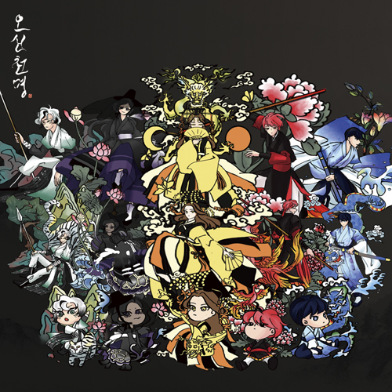
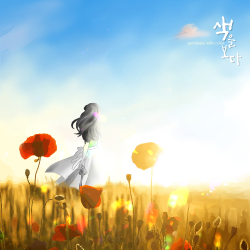

신들은 정말 신다울까?
이런 물음을 가지고 다시 읽어본 신화 속신들은 신의 모습이 아닌 인간 같은 모습을 더 많이
보여준다.
원하는 것을 얻기 위해 하는 행동은 인간과
다를 바 없었다.
그 중에서도 신화 속신들이 거짓말을 하는
에피소드들만 모아 웹 사이트로 구성해보았다.

Multimedia Design오신천명
'사악한 업룡에 의해 조선에 혼란이왔고, 위대한신선인 손기가 다섯신을 만들어 업룡을 물리치도록 명령한다. 다섯명의 신들은 업룡을 무찌르고 세상을 구하기위해 12개의 관문을 뚫고 나아간다.' 는 스토리의 동양풍 판타지 카드보드게임이다. 플레이어들은 다섯 신의 역할을 받아 게임을 진행한다.

Moving Image Animation색을 보다
색을 볼 수 없는세계
언제 색을 볼 수 있을까?
주인공은 오늘도 사진을 찍으러 나간다. 하지만 언제나처럼 색은 보이지가 않는다.
찍은 사진을 보면 주인공은 속상하기만 한다. 그 때, 불어오는 바람에 사진은 날아가는데...